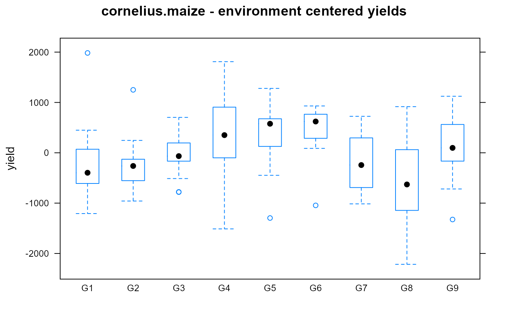

cornelius.maize.RdMaize yields for 9 cultivars at 20 locations.
data("cornelius.maize")
A data frame with 180 observations on the following 3 variables.
envenvironment factor, 20 levels
gengenotype/cultivar, 9 levels
yieldyield, kg/ha
Cell means (kg/hectare) for the CIMMYT EVT16B maize yield trial.
P L Cornelius and J Crossa and M S Seyedsadr. (1996). Statistical Tests and Estimators of Multiplicative Models for Genotype-by-Environment Interaction. Book: Genotype-by-Environment Interaction. Pages 199-234.
Forkman, Johannes and Piepho, Hans-Peter. (2014). Parametric bootstrap methods for testing multiplicative terms in GGE and AMMI models. Biometrics, 70(3), 639-647. http://doi.org/10.1111/biom.12162
library(agridat) data(cornelius.maize) dat <- cornelius.maize # dotplot(gen~yield|env,dat) # We cannot compare genotype yields easily # Subtract environment mean from each observation libs(reshape2) mat <- acast(dat, gen~env)#>mat <- scale(mat, scale=FALSE) dat2 <- melt(mat) names(dat2) <- c('gen','env','yield') libs(lattice) bwplot(yield ~ gen, dat2, main="cornelius.maize - environment centered yields")if(0){ # This reproduces the analysis of Forkman and Piepho. test.pc <- function(Y0, type="AMMI", n.boot=10000, maxpc=6) { # Test the significance of Principal Components in GGE/AMMI # Singular value decomposition of centered/double-centered Y Y <- sweep(Y0, 1, rowMeans(Y0)) # subtract environment means if(type=="AMMI") { Y <- sweep(Y, 2, colMeans(Y0)) # subtract genotype means Y <- Y + mean(Y0) } lam <- svd(Y)$d # Observed value of test statistic. # t.obs[k] is the proportion of variance explained by the kth term out of # the k...M terms, e.g. t.obs[2] is lam[2]^2 / sum(lam[2:M]^2) t.obs <- { lam^2/rev(cumsum(rev(lam^2))) } [1:(M-1)] t.boot <- matrix(NA, nrow=n.boot, ncol=M-1) # Centering rows/columns reduces the rank by 1 in each direction. I <- if(type=="AMMI") nrow(Y0)-1 else nrow(Y0) J <- ncol(Y0)-1 M <- min(I, J) # rank of Y, maximum number of components M <- min(M, maxpc) # Optional step: No more than 5 components for(K in 0:(M-2)){ # 'K' multiplicative components in the svd for(bb in 1:n.boot){ E.b <- matrix(rnorm((I-K) * (J-K)), nrow = I-K, ncol = J-K) lam.b <- svd(E.b)$d t.boot[bb, K+1] <- lam.b[1]^2 / sum(lam.b^2) } } # P-value for each additional multiplicative term in the SVD. # P-value is the proportion of time bootstrap values exceed t.obs colMeans(t.boot > matrix(rep(t.obs, n.boot), nrow=n.boot, byrow=TRUE)) } dat <- cornelius.maize # Convert to matrix format libs(reshape2) dat <- acast(dat, env~gen, value.var='yield') ## R> test.pc(dat,"AMMI") ## [1] 0.0000 0.1505 0.2659 0.0456 0.1086 # Forkman: .00 .156 .272 .046 .111 ## R> test.pc(dat,"GGE") ## [1] 0.0000 0.2934 0.1513 0.0461 0.2817 # Forkman: .00 .296 .148 .047 .285 }